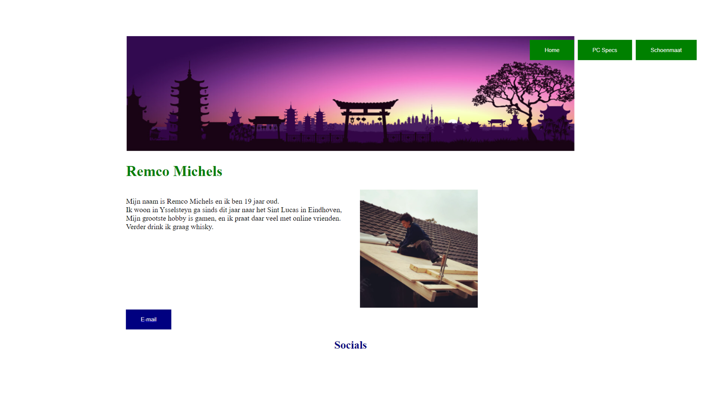
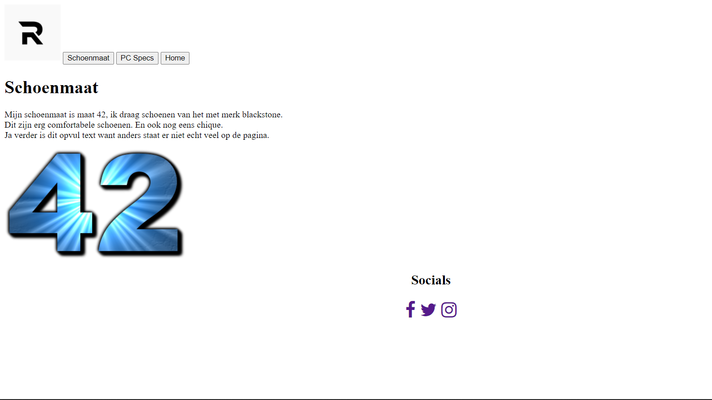
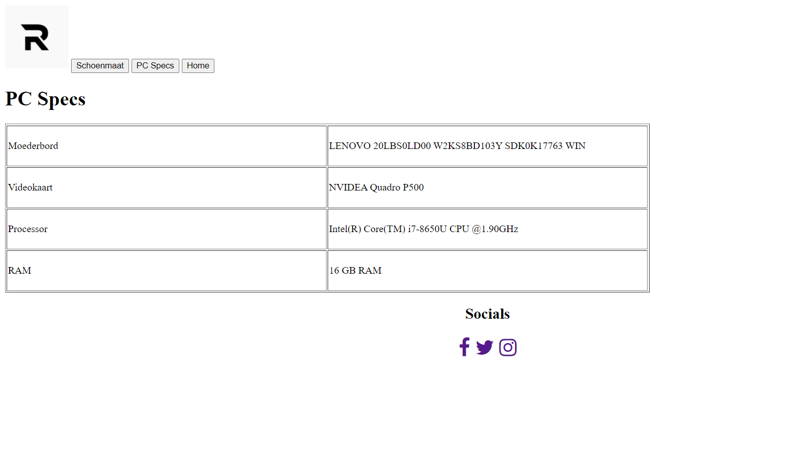

Zelf vindt ik dat ik veel groei heb laten zien in het maken van websites.
Dit vindt ik ook het leukste om te doen en ben zelf ook meer onderzoek gaan doen in het maken van websites.
Ik ben zeer tevreden met mijn groei in het maken van websites
Voor mij staat groei nog een beetje in de weg omdat ik niet precies weet wat ik wil gaan doen en welke kant ik op wil,
websites bouwen is nu wel de richting waar ik het meeste plezier in beleef en ga deze dan ook volgend jaar als keuze deel volgen.
Ik heb nu een website gemaakt voor mijn Database, het Shineproject en voor Vijfluik.
Ik ben erg blij met de resulaten van al mijn websites ook al heb ik niet voor alles een voldoende behaald.
Maar met de hoeveel lessen over html/css die we gehad hebben vindt ik dat ik en mooi resultaat heb neergezet.
Ik kan dit goed inzetten in andere opdrachten omdat ik toch wel weet dat ik het kan, maar dat ik het met andere opdrachten dan ook moet doen.
Ik leg de lat vaak nog iets te hoog en dat kan mijn groei soms wel eens in de weg staan.
Hieronder zie je de eerste website die ik ooit heb gemaakt.
Groei


